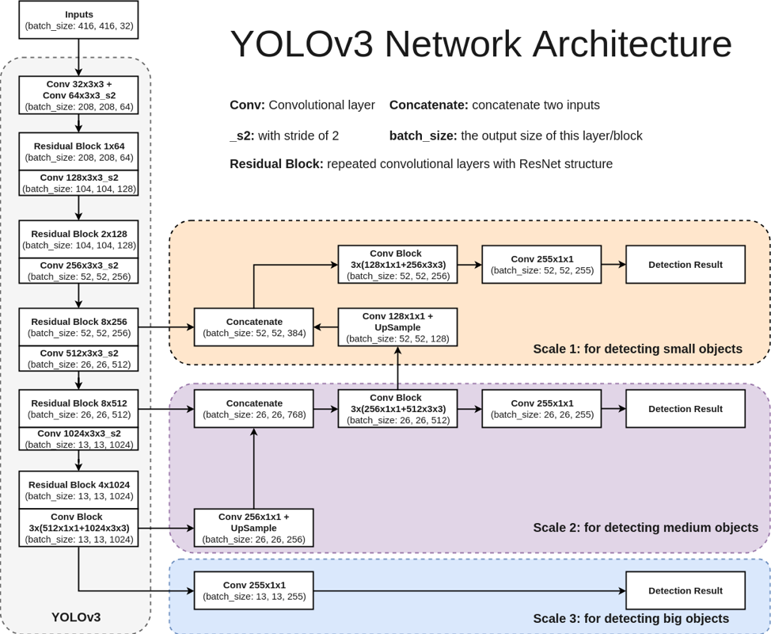
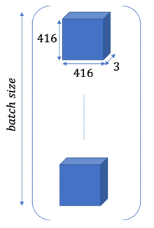
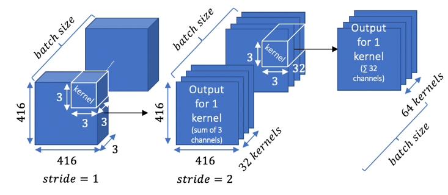
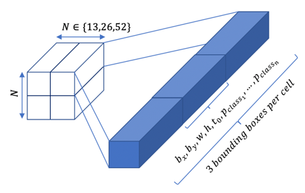
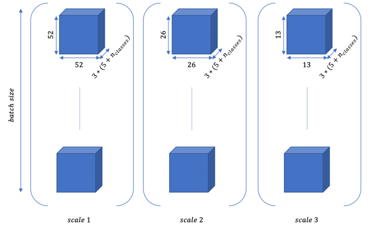
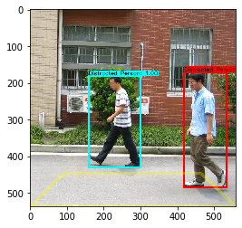

I propose an implementation of YOLOv3 using Tensorflow 2.0. For example purposes, I use the Penn-Fudan Database for Pedestrian Detection and Segmentation.
#!pip install tensorflow==2.0.0-beta1
import tensorflow as tf
import tensorflow.keras.layers
import cv2
import datetime
import pandas as pd
import os
import csv
import matplotlib.pyplot as plt
import numpy as np
import glob
import time
print(tf.__version__) #must be 2.0.0-beat1
BBOXES_PER_CELL = 3
ANCHORS_SMALL = tf.constant([[10,13],[16,30],[33,23]], dtype=tf.float32) #we should do k-means clustering on our dataset
ANCHORS_MEDIUM = tf.constant([[30,61],[62,45],[59,119]], dtype=tf.float32)
ANCHORS_LARGE = tf.constant([[116,90],[156,198],[373,326]], dtype=tf.float32)
INPUT_SIZE = 416
CLASSES_LIST =['Distracted Person', 'Person']
DISPLAY_CLASSES_LIST = ['Distracted Person', 'Person']
COLORS = [(0,255,255),(0,255,0)]
BATCH_NORM_MOMENTUM = 0.9
BATCH_NORM_EPSILON = 1e-05
LEAKY_RELU = 0.1
We use the architecture from the original paper:

The input images should be in shape (416, 416, 3) (3 channels for RGB). We might have to resize and pad the input images. The images are in batches of shape: (batch size, 416, 416, 3)

This tensor is fed through the network:

And outputs a tensor of shape (N*N*[3*(4 coordinates + 1 objectness score + n classes)] for each scale:

Here is the output for the three scales and the whole batch:

def convolution(x, filters, kernel_size, strides=(1,1), use_bias=True):
x = tf.keras.layers.Conv2D(filters, kernel_size, strides, padding='same', use_bias=True)(x) #padding='same' so that convolution works out: (416-3)/2 + 1 -> 208 and not 207
x = tf.keras.layers.BatchNormalization(momentum=BATCH_NORM_MOMENTUM, epsilon=BATCH_NORM_EPSILON, trainable=True)(x)
x = tf.keras.layers.LeakyReLU(alpha=LEAKY_RELU)(x)
return x
def residual_block(x, filters):
shortcut = x # 208
x = convolution(x, int(filters/2), 1) #(208-1)/1 +1 = 208
x = convolution(x, filters, 3) #(208-3)/1 + 1 = 206
x = tf.keras.layers.Add()([shortcut, x])
x = tf.keras.activations.linear(x)
return x
def darknet53(x):
x = convolution(x, 32, 3) #(416-3)/1 + 1 = 414
x = convolution(x, 64, 3, strides=(2,2)) #(414-3)/2 + 1 = 208 (we take the sup)
x = residual_block(x, 64)
x = convolution(x, 128, 3, strides=(2,2))#(208-3)/2 + 1 = 104
for i in range(2):
x = residual_block(x, 128)
x = convolution(x, 256, 3, strides=(2,2)) #(104-3)/2 + 1 = 52
for i in range(8):
x = residual_block(x, 256)
scale11 = x #52
x = convolution(x, 512, 3, strides=(2,2)) #(52-3)/2 + 1 = 26
for i in range(8):
x = residual_block(x, 512)
scale21 = x #26
x = convolution(x, 1024, 3, strides=(2,2))
for i in range(4):
x = residual_block(x, 1024)
scale22 = x
scale3 = x
for i in range(3):
x = convolution(x, 512, 1)
x = convolution(x, 1024, 3)
scale3 = convolution(scale3, 255, 1)
scale22 = convolution(scale22, 256, 1)
scale22 = tf.keras.layers.UpSampling2D((2,2), interpolation='nearest')(scale22)
scale2 = tf.keras.layers.Concatenate(axis=-1)([scale21,scale22])
for i in range(3):
scale2 = convolution(scale2, 256, 1)
scale2 = convolution(scale2, 512, 3)
scale12 = scale2
scale2 = convolution(scale2, 255, 1)
scale12 = convolution(scale12, 128, 1)
scale12 = tf.keras.layers.UpSampling2D((2,2), interpolation='nearest')(scale12)
scale1 = tf.keras.layers.Concatenate(axis=-1)([scale11, scale12])
for i in range(3):
scale1 = convolution(scale1, 128, 1)
scale1 = convolution(scale1, 256, 3)
scale1 = convolution(scale1, 255, 1)
scale1 = convolution(scale1, 3*(5+len(CLASSES_LIST)), 1)
scale2 = convolution(scale2, 3*(5+len(CLASSES_LIST)), 1)
scale3 = convolution(scale3, 3*(5+len(CLASSES_LIST)), 1)
scale1 = decode(scale1, ANCHORS_SMALL)
scale2 = decode(scale2, ANCHORS_MEDIUM)
scale3 = decode(scale3, ANCHORS_LARGE)
return scale1, scale2, scale3
def IOU(bp, bt):
xminp, yminp, xmaxp, ymaxp = bp[:, 0], bp[:, 1], bp[:, 2], bp[:, 3]
xmint, ymint, xmaxt, ymaxt = bt[:, 0], bt[:, 1], bt[:, 2], bt[:, 3]
xminp, xmaxp = tf.minimum(xminp,xmaxp), tf.maximum(xminp,xmaxp)
yminp, ymaxp = tf.minimum(yminp,ymaxp), tf.maximum(yminp,ymaxp)
xmint, xmaxt = tf.minimum(xmint,xmaxt), tf.maximum(xmint,xmaxt)
ymint, ymaxt = tf.minimum(ymint,ymaxt), tf.maximum(ymint,ymaxt)
area_p = tf.multiply(tf.subtract(xmaxp,xminp), tf.subtract(ymaxp,yminp))
area_t = tf.multiply(tf.subtract(xmaxt,xmint), tf.subtract(ymaxt,ymint))
xI_1, xI_2, yI_1, yI_2 = tf.maximum(xminp, xmint), tf.minimum(xmaxp, xmaxt), tf.maximum(yminp, ymint), tf.minimum(ymaxp, ymaxt)
cond = tf.logical_and(tf.greater(xI_2, xI_1), tf.greater(yI_2, yI_1))
I = tf.multiply(tf.subtract(xI_2, xI_1), tf.subtract(yI_2, yI_1))
true_mask = tf.constant(True, dtype=tf.bool, shape=np.shape(I.numpy()))
zeros = tf.zeros(tf.shape(I), dtype=I.dtype)
I = tf.where(cond, I, zeros)
U = tf.subtract(tf.add(area_p, area_t), I)
return tf.divide(I,U)
We have to modify the training images so that they match the output (in order to compare output and ground-truth) When training or running inference, the image goes through the following pipeline:
416x416 (with zero padding)416x416dimension instead of relative offsets)def image_preprocess(image, bboxes, target_size=(INPUT_SIZE,INPUT_SIZE)):
"""
bboxes = [[xmin,ymin,xmax,ymax],[]] for one image
resizes image and adds zero padding so that it is 416*416
updates the bboxes (nparray) to match the new image
returns the new image as nparray and y_true as a dict 'classes' and 'bboxes' (nparray)
"""
ih, iw = target_size
h, w, _ = image.shape
scale = min(iw/w, ih/h)
nw, nh = int(scale * w), int(scale * h)
image_resized = cv2.resize(image, (nw, nh))
image_paded = np.zeros((ih, iw, 3))
dw, dh = (iw-nw) // 2, (ih-nh) // 2
image_paded[dh:nh+dh, dw:nw+dw, :] = image_resized #the original image is centered
image_paded = image_paded / 255.
bboxes = np.array(bboxes)*scale + np.array([dw, dh, dw, dh]) #bboxes = [[xmin,ymin,xmax,ymax]]
return image_paded, bboxes
def ground_truth_preprocess(classes, bboxes):
"""
classes = [class1, class2], bboxes=[[xmin, ymin, xmax, ymax],[]] for ONE image
returns 3 arrays of shape (N, N, 3, 5+num_classes) (one for each scale) scale = [[bx,by,bw,bh,conf,probs],[]]
"""
scale1 = np.zeros((52, 52, BBOXES_PER_CELL, 5+len(CLASSES_LIST)))
scale2 = np.zeros((26, 26, BBOXES_PER_CELL, 5+len(CLASSES_LIST)))
scale3 = np.zeros((13, 13, BBOXES_PER_CELL, 5+len(CLASSES_LIST)))
bboxes = np.array(bboxes)
bboxes = np.reshape(bboxes, (-1,4)) #unspecified value -1
for i,bbox in enumerate(bboxes):
xmin, ymin, xmax, ymax = bbox
center = np.array([xmin + xmax, ymin + ymax])*0.5
width_height = np.array([xmax-xmin, ymax-ymin])
#cell widths
cell_w1, cell_w2, cell_w3 = INPUT_SIZE/52., INPUT_SIZE/26., INPUT_SIZE/13.
#normalized center coordinates
center1, center2, center3 = center/cell_w1, center/cell_w2, center/cell_w3
#cells responsible for the ground truth
cell_1, cell_2, cell_3 = (center1).astype(int), (center2).astype(int), (center3).astype(int)
#confidence score
scale1[cell_1[0], cell_1[1], :, 4] = 1.0 #b_x, b_y, b_w, b_h, C, probas
scale2[cell_2[0], cell_2[1], :, 4] = 1.0
scale3[cell_3[0], cell_3[1], :, 4] = 1.0 #not 1.0 else problem when inverting
#class probability
num_class = CLASSES_LIST.index(classes[i])
scale1[cell_1[0], cell_1[1], :, 5 + num_class] = 1.0
scale2[cell_2[0], cell_2[1], :, 5 + num_class] = 1.0
scale3[cell_3[0], cell_3[1], :, 5 + num_class] = 1.0
#b_x, b_y
scale1[cell_1[0], cell_1[1], :, 0:2] = center1-cell_1
scale2[cell_2[0], cell_2[1], :, 0:2] = center2-cell_2
scale3[cell_3[0], cell_3[1], :, 0:2] = center3-cell_3
#b_w, b_h
scale1[cell_1[0], cell_1[1], :, 2:4] = width_height/cell_w1
scale2[cell_2[0], cell_2[1], :, 2:4] = width_height/cell_w2
scale3[cell_3[0], cell_3[1], :, 2:4] = width_height/cell_w3
return scale1, scale2, scale3
def encode(x, anchors):
"""
x = scale = (N,N,3,5+num_classes) = [[bx,by,bw,bh,conf,probs],[]]
output = [[tx,ty,tw,th,t0,probs],[]]
"""
nb_cells = np.shape(x)[0]
x = np.reshape(x, (-1, 5+len(CLASSES_LIST)))
tx = x[:,0][:, np.newaxis]
ty = x[:,1][:, np.newaxis]
tw = x[:,2][:, np.newaxis]
th = x[:,3][:, np.newaxis]
t0 = x[:,4][:, np.newaxis]
probs = x[:,5:]
tile_of_cells = np.array([np.unravel_index(i, (nb_cells, nb_cells)) for i in range(nb_cells**2)])
rows = tile_of_cells[:,0]
cols = tile_of_cells[:,1]
rows = np.reshape(rows, (-1,1)) #convert to one column vector
cols = np.reshape(cols, (-1,1))
rows = np.repeat(rows, BBOXES_PER_CELL, axis=0) #repeat lines for each box
cols = np.repeat(cols, BBOXES_PER_CELL, axis=0)
#rows = c_y and cols = c_x
tx = tf.subtract(tx, cols)
tx = tf.divide(tx, 1-tx)
tx = tf.math.log(tx) #reciprocal of sigmoid
tx = tf.where(tf.math.is_nan(tx), tf.zeros_like(tx), tx) #remove -inf and nans
tx = tf.where(tf.math.is_inf(tx), tf.zeros_like(tx), tx)
ty = tf.subtract(ty, rows)
ty = tf.math.log(tf.divide(ty, 1-ty))
ty = tf.where(tf.math.is_nan(ty), tf.zeros_like(ty), ty)
ty = tf.where(tf.math.is_inf(ty), tf.zeros_like(ty), ty)
anchors_repeat = np.repeat(anchors, nb_cells**2, axis=0) #to match the shape of tw
tw = tf.divide(tf.math.log(tw), anchors_repeat[:, 0][:, np.newaxis])
tw = tf.where(tf.math.is_inf(tw), tf.zeros_like(tw), tw)
th = tf.divide(tf.math.log(th), anchors_repeat[:, 1][:, np.newaxis])
th = tf.where(tf.math.is_inf(th), tf.zeros_like(th), th)
t0 = tf.math.log(tf.divide(t0, 1-t0))
result = tf.concat([tx, ty, tw, th, t0, probs], -1)
result = tf.reshape(result, (nb_cells, nb_cells, BBOXES_PER_CELL*(5 + len(CLASSES_LIST))))
return result
def decode(scale, anchors):
"""
input: scale1 or scale2 or scale3 (batch_size, S, S, 255)
output: (batch_size*S*S*3, 5 + num_classes)
"""
nb_cells = np.shape(scale)[1]
scale = tf.keras.layers.Reshape((nb_cells*nb_cells*BBOXES_PER_CELL, 5 + len(CLASSES_LIST)))(scale) #(batch_size, S*S*3, 7)
tx = tf.slice(scale, [0,0,0], [-1,nb_cells*nb_cells*BBOXES_PER_CELL, 1])
ty = tf.slice(scale, [0,0,1], [-1,nb_cells*nb_cells*BBOXES_PER_CELL, 1])
tw = tf.slice(scale, [0,0,2], [-1,nb_cells*nb_cells*BBOXES_PER_CELL, 1])
th = tf.slice(scale, [0,0,3], [-1,nb_cells*nb_cells*BBOXES_PER_CELL, 1])
t0 = tf.slice(scale, [0,0,4], [-1,nb_cells*nb_cells*BBOXES_PER_CELL, 1])
probs = tf.slice(scale, [0,0,5], [-1,nb_cells*nb_cells*BBOXES_PER_CELL, len(CLASSES_LIST)])
tile_of_cells = np.array([np.unravel_index(i, (nb_cells, nb_cells)) for i in range(nb_cells**2)])
rows = tile_of_cells[:,0]
cols = tile_of_cells[:,1]
rows = np.reshape(rows, (-1,1)) #convert to one column vector
cols = np.reshape(cols, (-1,1))
rows = np.repeat(rows, BBOXES_PER_CELL, axis=0) #repeat lines for each box
cols = np.repeat(cols, BBOXES_PER_CELL, axis=0)
rows = tf.constant(rows, dtype=tf.float32)[tf.newaxis, :, :] #(1, S*S*3, 1) to take the batch size into account
cols = tf.constant(cols, dtype=tf.float32)[tf.newaxis, :, :]
#rows = c_y and cols = c_x
bx = tf.keras.layers.Add()([tx, cols])
by = tf.keras.layers.Add()([ty, rows])
anchors_repeat = np.repeat(anchors, nb_cells**2, axis=0) #to match the shape of tw
anchors_w = anchors_repeat[:, 0][:, np.newaxis][np.newaxis, :, :] #transform into column and then add batch_size dim
anchors_h = anchors_repeat[:, 1][:, np.newaxis][np.newaxis, :, :]
bw = tf.keras.activations.exponential(tw)
bw = tf.keras.layers.Multiply()([anchors_w, bw])
bh = tf.keras.activations.exponential(th)
bh = tf.keras.layers.Multiply()([anchors_h, bh])
t0 = tf.keras.activations.sigmoid(t0)
scale = tf.keras.layers.Concatenate(axis=-1)([bx, by, bw, bh, t0, probs])
return scale
def bbox_back_to_scale(y):
"""
input: y (13*13*3,255) tensor
convert [bx,by,bw,bh] to [xmin,ymin,xmax,ymax]
outputs a (N*N*3, 5+num_classes) vector
"""
bboxes = y[:, :4]
#convert to xmin, ymin, xmax, ymax and reshape to vector
bx = bboxes[:, 0]
by = bboxes[:, 1]
bw = bboxes[:, 2]
bh = bboxes[:, 3]
#the bx and by are expressed in the referencial of the cell, we have to add (x_cell,y_cell)*dim_cell
nb_cells = int(np.sqrt(np.shape(bboxes)[0]/BBOXES_PER_CELL))
tile_of_cells = np.array([np.unravel_index(i, (nb_cells, nb_cells)) for i in range(nb_cells**2)])
rows = tile_of_cells[:,0]
cols = tile_of_cells[:,1]
rows = np.repeat(rows, BBOXES_PER_CELL, axis=0)
cols = np.repeat(cols, BBOXES_PER_CELL, axis=0)
bx = bx + rows
#convert bx,by,bw,bh to xmin,ymin,xmax,ymax
by = by + cols
start = time.time()
xmin = (bx-bw/2)[:, tf.newaxis]
ymin = (by-bh/2)[:, tf.newaxis]
xmax = (bx+bw/2)[:, tf.newaxis]
ymax = (by+bh/2)[:, tf.newaxis]
bboxes = tf.concat([xmin, ymin, xmax, ymax], -1)
stop = time.time()
bboxes = tf.cast(bboxes*INPUT_SIZE/nb_cells, tf.int32)
bboxes = tf.cast(bboxes, y.dtype)
y = tf.concat([bboxes,y[:,4:]],-1)
return y
def non_max_suppression(y, iou_threshhold=0.5, obj_threshhold=0.5):
"""
input: y=[[bx,by,bw,bh,conf,probas],[]] (13*13*3+26*26*3+52*52+*3, 5+num_classes)
for the evaluation, not training (batch_size = 1 and shape(y)=(13,13,255))
returns y as a (13*13*3 + 26*26*3 + 52*52+3, [xmin,xmax,ymin,ymax,class_id,class_prob]) tensor
"""
#eliminate low objectness rows
cond = tf.where(y[:,4]<=obj_threshhold, False, True)[:, tf.newaxis]
cond = tf.tile(cond, [1,tf.shape(y)[1].numpy()]) #has to have the same number of columns as y
y = tf.boolean_mask(y, cond) #returns a one row vector so we have to reshape it
print(y)
y = tf.reshape(y, (-1,5+len(CLASSES_LIST)))
#assign the detection to the maximum probability
bboxes = y[:,:4]
conf = y[:, 4]
probs = y[:, 5:]
#iterate over the probs = [[p1,p2,...,pn],[p1,p2,...,pn],...]
new_probs = []
for i,prob in enumerate(probs):
class_id = np.argmax(prob)
new_probs+=[[class_id,prob[class_id]]]
new_probs = np.array(new_probs[:])
new_probs = np.reshape(new_probs, (-1,2)) #for when new_probs is empty
classes_id = np.unique(new_probs[:,0]).astype(int) #returns an array without repetition
mask = tf.constant(True, dtype=tf.bool, shape=tf.shape(y)[0].numpy())[:, tf.newaxis]
mask = tf.tile(mask, [1,tf.shape(y)[1].numpy()])
for class_id in classes_id:
class_confs = np.where(new_probs[:,0]==class_id, conf, 0.) #keeps the indexing of probs
class_confs = tf.tile([class_confs], [np.shape(bboxes)[1],1])
class_confs = tf.transpose(class_confs)
indexes = [i for i in range(np.shape(class_confs)[0])]
max_conf = np.argmax(class_confs, axis=0)[0] #get the index of the box with the highest confidence score
while len(indexes)>0:#check all the boxes
#print('indexes', indexes)
pred = tf.tile([bboxes[max_conf]], [np.shape(bboxes)[0],1]) #create a vector with only bboxes[max_conf] to calculate IOU in one pass
bboxes_filtered = np.where(class_confs==0.,tf.zeros(tf.shape(bboxes)),bboxes) #we make sure the iou for bboxes of other classes won't be > 0.5
bboxes_filtered = tf.constant(bboxes_filtered) #convert to tensor
iou = IOU(pred, bboxes_filtered)
iou = tf.where(tf.math.is_nan(iou), tf.ones_like(iou), iou) #check for nans (boxes that are too little)
new_mask = tf.where(iou>iou_threshhold, False, True)[:, tf.newaxis]
new_mask = tf.tile(new_mask, [1, tf.shape(y)[1].numpy()])
mask = tf.logical_and(mask, new_mask) #we update the mask to remove the bboxes for which iou > 0.5
mask = mask.numpy()
mask_index = np.copy(mask[:,0]) #mask for the index
mask[max_conf]=[True for _ in range(np.shape(mask)[1])] #since iou with itself = 1, the prediction was removed
for i,val in enumerate(mask_index):
if not val and i in indexes: #maybe we already removed it
indexes.remove(i)
if len(indexes)>0: #check if we didn't deleted it all in the previous steps
max_conf = indexes[0] #and then iterate over all remaining boxes
y = tf.boolean_mask(y, mask)
mask = mask[:,:np.shape(new_probs)[1]] #to match shapes
new_probs = tf.boolean_mask(new_probs, mask)
new_probs = tf.reshape(new_probs, shape=(-1,2))
y = tf.reshape(y, (-1,5+len(CLASSES_LIST)))
new_probs = tf.cast(new_probs, y.dtype)
y = tf.concat([y[:,:4],new_probs],1)
return y
def bboxes_postprocess(y, org_img_shape):
"""
y is a (N*N*3,255) tensor
returns a (N*N*3,255) tensor
"""
bboxes = y[:, :4]
remainder = y[:, 4:]
# convert to original aspect ratio
org_h, org_w = org_img_shape
resize_ratio = min(INPUT_SIZE/org_w, INPUT_SIZE/org_h)
dw = (INPUT_SIZE - resize_ratio * org_w) / 2
dh = (INPUT_SIZE - resize_ratio * org_h) / 2
xmin = tf.divide(tf.subtract(bboxes[:, 0], dw), resize_ratio)
xmax = tf.divide(tf.subtract(bboxes[:, 2], dw), resize_ratio)
ymin = tf.divide(tf.subtract(bboxes[:, 1], dh), resize_ratio)
ymax = tf.divide(tf.subtract(bboxes[:, 3], dh), resize_ratio)
#clip boxes that are out of range
xmin = tf.clip_by_value(xmin, 0, org_w)[:, tf.newaxis] #convert row to column vector
xmax = tf.clip_by_value(xmax, 0, org_w)[:, tf.newaxis]
ymin = tf.clip_by_value(ymin, 0, org_h)[:, tf.newaxis]
ymax = tf.clip_by_value(ymax, 0, org_h)[:, tf.newaxis]
return tf.concat([xmin, ymin, xmax, ymax, remainder], 1)
def draw_bboxes(bboxes, image):
"""
bboxes = [[xmin,ymin,ymax,class_id,proba],[]]
cv2 rectangle: top left, bottom right (y axis downwards)
"""
h, w, _ = image.shape
bbox_thick = int(0.6 * (h + w) / 200)
for bbox in bboxes:
xmin,ymin,xmax,ymax,class_id,score = bbox
if is_bbox_in_danger_zone(bbox, image.shape):
color = (255, 0, 0) #danger
else:
color = COLORS[class_id]
cv2.rectangle(image, (xmin,ymin), (xmax,ymax), color, bbox_thick)
bbox_mess = '%s: %.2f' % (DISPLAY_CLASSES_LIST[class_id], score)
t_size = cv2.getTextSize(bbox_mess, 0, 0.5, thickness=bbox_thick//2)[0]
cv2.rectangle(image, (xmin,ymin), (xmin + t_size[0], ymin - t_size[1] - 3), color, -1)
cv2.putText(image, bbox_mess, (xmin, ymin-2), cv2.FONT_HERSHEY_SIMPLEX, 0.5, (0, 0, 0), bbox_thick//2, lineType=cv2.LINE_AA)
return image
def draw_danger_zone(image, alpha=0.3, y_lim=1/6):
h,w,_ = np.shape(image)
overlay = image.copy()
slope = w/h # on cherche x en imposant y
y_lim = y_lim*h
pts = np.array([[0,h],[slope*y_lim,h-y_lim],[w-slope*y_lim,h-y_lim],[w,h],[0,h]], np.int32)
pts = pts.reshape((-1,1,2))
cv2.polylines(overlay,[pts],False,(255,255,0),8)
cv2.addWeighted(overlay, alpha, image, 1 - alpha, 0, image)
return image
def is_bbox_in_danger_zone(bbox, img_shape, y_lim=1/6):
h,w,_ = img_shape
slope = w/h
y_lim = y_lim*h
x1,y1,x3,y3 = np.array(bbox[:4])
x2,y2,x4,y4 = x3,y1,x1,y3
cond = False
for coord in [[x1,y1], [x2,y2], [x3,y3], [x4,y4]]:
i,j = coord
cond = cond or ((j > h-y_lim) and (i > slope*(h-j)) and (i < w-slope*(h-j)))
if cond:
return True
return False
Let's pre-process a ground-truth image and post-process it as if it was the output of the network
#EVAL ONE IMAGE
image_org = 'FudanPed00001.jpg'
image_org = cv2.imread(image_org, 1)
image_org = cv2.cvtColor(image_org, cv2.COLOR_BGR2RGB)
img_shape = np.shape(image_org)[:2]
bboxes = ['160', '182', '302', '431', '420', '171', '535', '486']
bboxes = np.array(bboxes).astype(int)
bboxes = np.reshape(bboxes, (-1,4))
classes = ['Distracted Person', 'Distracted Person']
y_true = {'classes':classes, 'bboxes':bboxes}
image, y_true['bboxes'] = image_preprocess(image_org, y_true['bboxes'])
scale1, scale2, scale3 = ground_truth_preprocess(y_true['classes'], y_true['bboxes'])
start_postprocess = time.time()
scale1 = tf.reshape(scale1, (-1, 5+len(CLASSES_LIST)))
scale2 = tf.reshape(scale2, (-1, 5+len(CLASSES_LIST)))
scale3 = tf.reshape(scale3, (-1, 5+len(CLASSES_LIST)))
scale1 = bbox_back_to_scale(scale1)
scale2 = bbox_back_to_scale(scale2)
scale3 = bbox_back_to_scale(scale3)
y = tf.concat([scale1, scale2, scale3], 0)
y = non_max_suppression(y)
y = bboxes_postprocess(y, img_shape)
image = draw_bboxes(y, image_org)
image = draw_danger_zone(image)
plt.imshow(image);
stop_postprocess = time.time()
print('postprocess: {} s'.format(round(stop_postprocess - start_postprocess, 3)))

We train the model using the mean squared error loss function, as the original publication suggests.
checkpoint_path = "yolov3_coco.ckpt"
cp_callback = tf.keras.callbacks.ModelCheckpoint(
checkpoint_path, verbose=1, save_weights_only=True,
# Save weights, every 5-epochs.
save_freq=5)
inputs = tf.keras.Input(shape=(INPUT_SIZE, INPUT_SIZE, 3))
scale1, scale2, scale3 = darknet53(inputs) # shape = (None, 52*52*3, 5 + num classes)
model = tf.keras.Model(inputs=inputs, outputs=[scale1, scale2, scale3])
# Compile the model
model.compile(optimizer=tf.keras.optimizers.Adam(),
loss='mean_squared_error', #the function is applied for each output
metrics=['accuracy'])
model.summary()
Replace the three arrays train_scale1,train_scale2 and train_scale3 with the ground truths of the data set for each scale.
# train
model.fit(train_images, [train_scale1, train_scale2, train_scale3],
batch_size=12,
epochs=30,
validation_split=0.2,
callbacks = [cp_callback])
We load pre-trained weights on the COCO Dataset available on the original YOLOv3 website.
#Load pre-trained weights
with open('yolov3.weights', "rb") as fp:
pretrained_weights = np.fromfile(fp, dtype=np.float32)
print('Number of pretrained weights from Darknet : {}'.format(np.shape(pretrained_weights)[0]))
used_weights = 0
for i in range(len(model.layers)):
layer_weights = model.layers[i].get_weights()
weights = []
for j in range(len(layer_weights)):
w = layer_weights[j]
shape_w = np.shape(w)
w = np.reshape(w, (1,-1))
nb_w = np.shape(w)[1]
new_weights = pretrained_weights[used_weights:used_weights + nb_w]
new_weights = np.reshape(new_weights, shape_w)
weights.append(new_weights)
used_weights+=nb_w
weights = np.array(weights)
model.layers[i].set_weights(weights)
print('{} weights used.'.format(used_weights))
We can also load weights from previous trainings:
#LOAD WEIGHTS
model.load_weights('weights/weights.h5')
We test how the model performs on the test dataset (replace the inputs by the right arrays).
test_loss = model.evaluate(test_images, [test_scale1, test_scale2, test_scale3], verbose=2, batch_size = 10)
print('Test loss:', test_loss)
We can then run inference on the model we just trained
start_preprocess = time.time()
image_org = 'FudanPed00001.jpg'
image_org = cv2.imread(image_org, 1)
image_org = cv2.cvtColor(image_org, cv2.COLOR_BGR2RGB)
img_shape = np.shape(image_org)[:2]
bboxes = ['160', '182', '302', '431', '420', '171', '535', '486']
bboxes = np.array(bboxes).astype(int)
bboxes = np.reshape(bboxes, (-1,4))
image, _ = image_preprocess(image_org, bboxes)
image = tf.convert_to_tensor(image)
image = tf.reshape(image, (1, INPUT_SIZE, INPUT_SIZE, 3))
start_prediction = time.time()
scale1, scale2, scale3 = model.predict(image) # (1,52*52*3,5+num_classes) -> deja decode
start_postprocess = time.time()
scale1 = bbox_back_to_scale(scale1[0])
scale2 = bbox_back_to_scale(scale2[0])
scale3 = bbox_back_to_scale(scale3[0])
y = tf.concat([scale1, scale2, scale3], 0)
y = non_max_suppression(y)
print(y)
y = bboxes_postprocess(y, img_shape)
image_org = draw_danger_zone(image_org)
image = draw_bboxes(y, image_org)
plt.imshow(image_org);
stop = time.time()
print('preprocess: {} s'.format(round(start_prediction - start_preprocess, 3)))
print('prediction: {} s'.format(round(start_postprocess - start_prediction, 3)))
print('post-process: {} s'.format(round(stop - start_postprocess, 3)))
print('total time: {} s'.format(round(stop - start_preprocess, 3)))
print('fps: {}'.format(round(1/(stop - start_preprocess), 3)))
#SAVE WEIGHTS
model.save_weights('weights_{}.h5'.format(datetime.datetime.now().strftime("%Y-%m-%d_%H:%M:%S")))